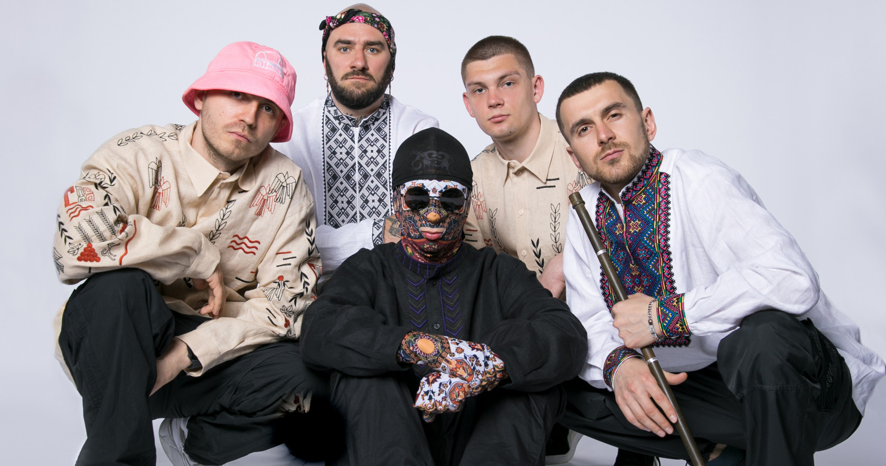
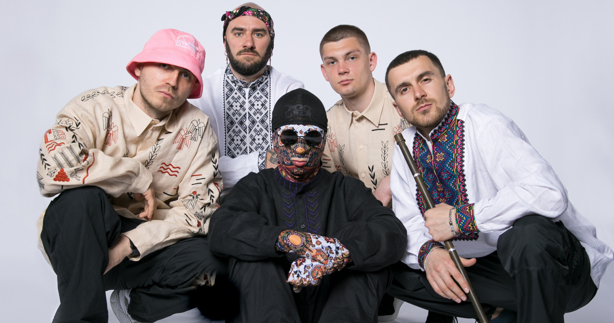

Біографія гурту
«Kalush» — український реп-гурт, заснований у 2019 році. Отримав право представляти Україну на Пісенному конкурсі Євробачення 2022 з піснею «Стефанія».[1] 15 травня 2022 року гурт став переможцем «Євробачення-2022».[2]

«Kalush» — український реп-гурт, заснований у 2019 році. Отримав право представляти Україну на Пісенному конкурсі Євробачення 2022 з піснею «Стефанія».[1] 15 травня 2022 року гурт став переможцем «Євробачення-2022».[2]
